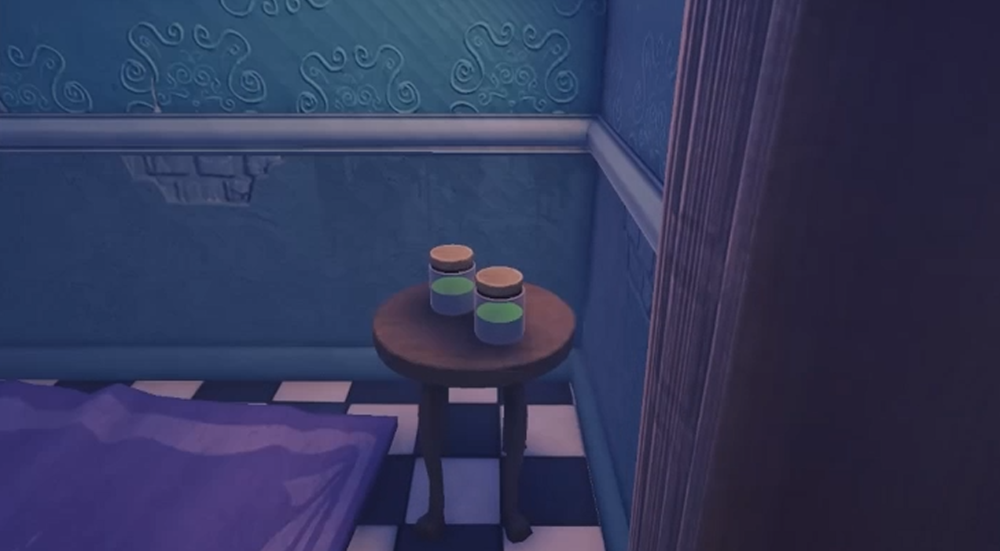
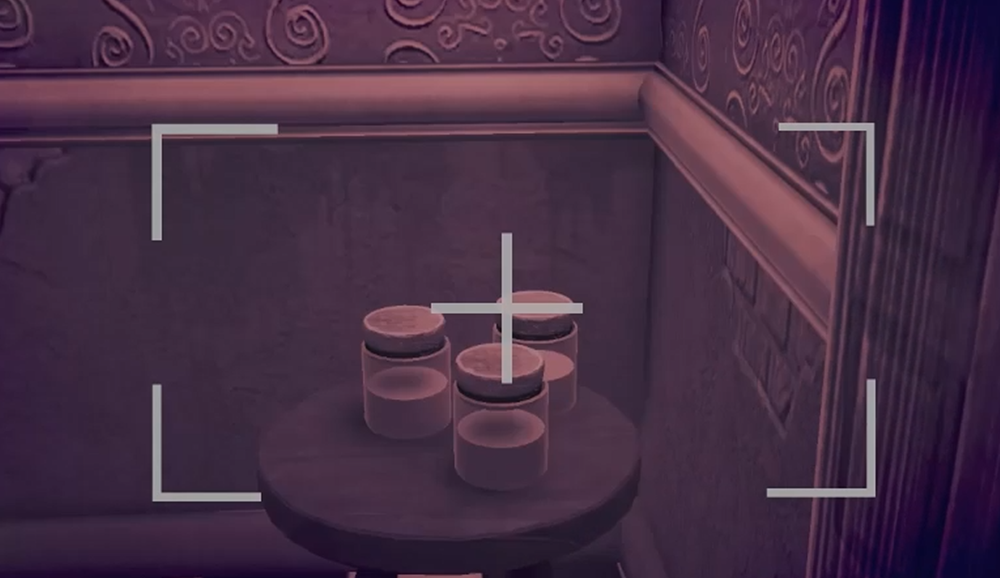
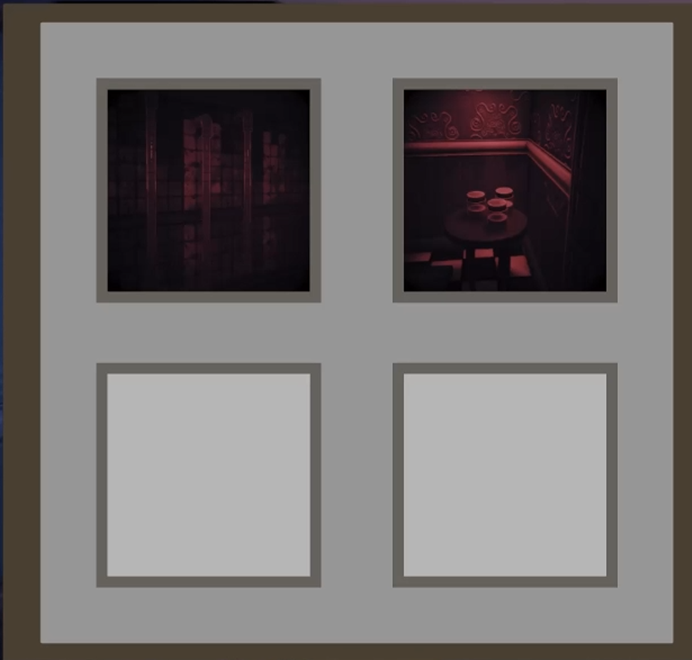

Introduction
Players explore an abandoned mansion to find 5 haunted objects, before they go insane. They must identify haunted objects by looking through their camera to discover hidden items, and observe ghost behaviour.
Gameplay Programmer
My teams submission for the Uniting the valley hackathon, where it placed second!
👥 5 | ⏱ 24 hours | 🧠 Unity (C#)
Players explore an abandoned mansion to find 5 haunted objects, before they go insane. They must identify haunted objects by looking through their camera to discover hidden items, and observe ghost behaviour.
The camera and the Ghost. Certain objects aren't visible unless you are looking through your camera. When the main game scene is loaded, every object has a chance to become a "haunted object". Once 5 are selected the scene finishes loading and the player has 3 minutes to find each of them



Theme of the Hackathon was "Creepy", so my main focus was making the game constantly build tension. One way was with our ghost Jacob, a friendly ghost that like the rest of the things trapped in the spirit realm can only be seen through the lens of the camera. They are a friendly ghost that will help the player by moving from haunted object to haunted object. But be careful, as the players sanity gets lower, Jacob will get confused and think that the player is a haunted object, making it more difficult to take clear photos.
This game was a great way for me to test my skills in unity! I had alot of fun working on the level for the game, and coming up with the core loop of the game. It was a great exercise in creating a good vertical slice in a short time frame!